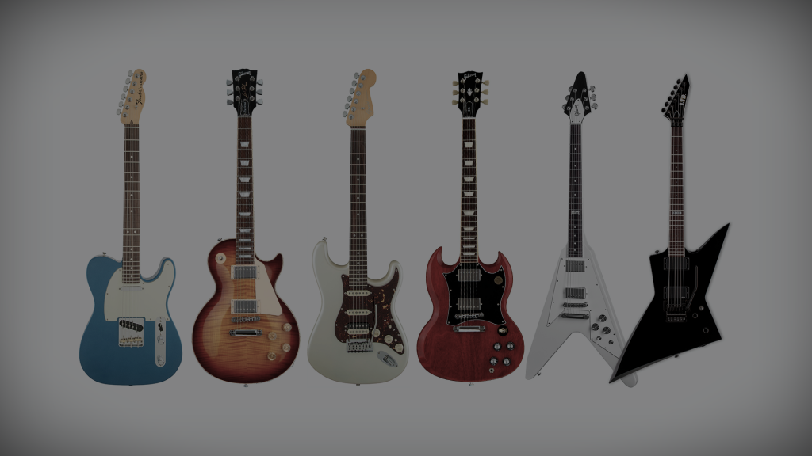
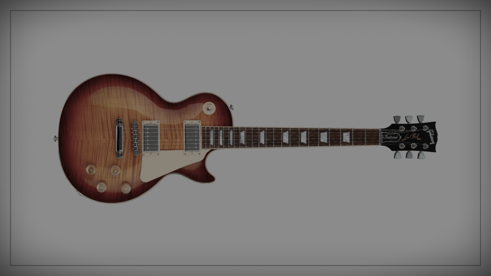
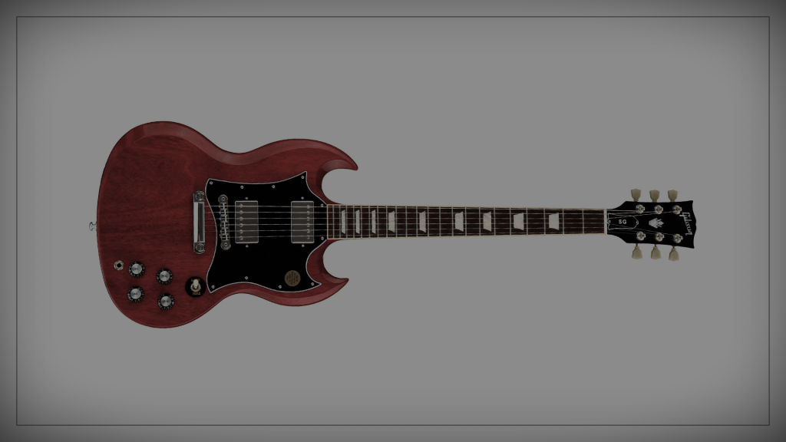

Tipos de Guitarra
O mercado musical tem uma quantidade grande de tipos de guitarra. Essa variedade de modelos faz até mesmo músicos experientes terem dúvidas na hora de escolher o instrumento.
Veja alguns tipos de guitarra a seguir:
★ Telecaster ★

- ⭑Captadores: Single coil
- ⭑Estilos mais característicos: Country, blues, rock e jazz
★ Les Paul ★

- ⭑Captadores: Humbucker
- ⭑Estilo mais característico: Rock
★ Stratocaster ★

- ⭑Captadores: Single Coil
- ⭑Estilos mais característicos: Rock, blues, funk
★ SG ★

- ⭑Captadores: Humbucker
- ⭑Estilo mais característico: Rock
★ Explorer ★

- ⭑Captadores: Humbucker
- ⭑Estilo mais característico: Rock